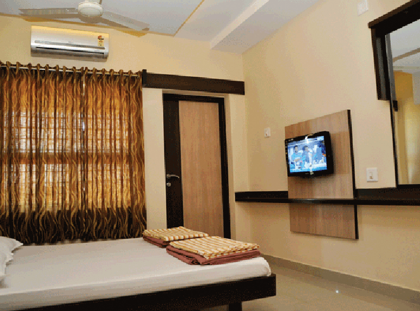

HOTEL RAMA
Hotel Rama was established in the year 1989. Strategically located in the Heart of Puttur Town. It is barely 300 metres from the bus stand and about 3 kms from the railway station (KABAKA PUTTUR). The nearest Airport is Mangalore (60 kms).Hotel Rama is having 48 comfortable, tastefully appointed rooms and suites. Guests can relish on North and South Indian a-la-carte menu presented in our attached Restaurant, Hotel Ganesh Prasad.
